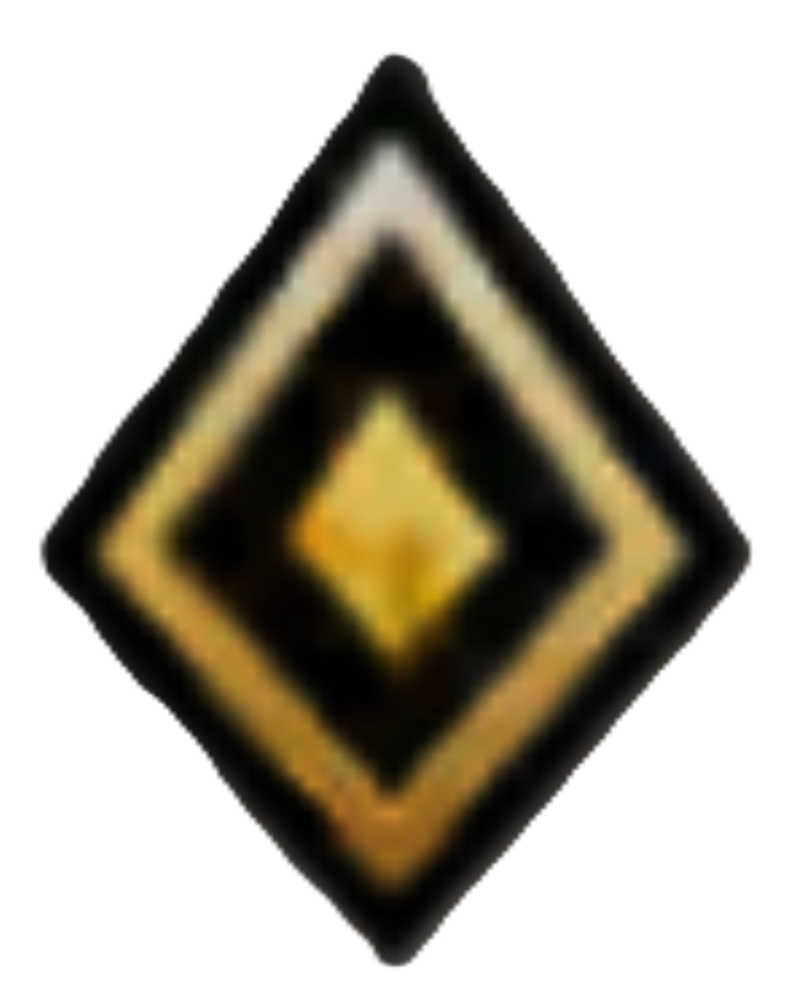
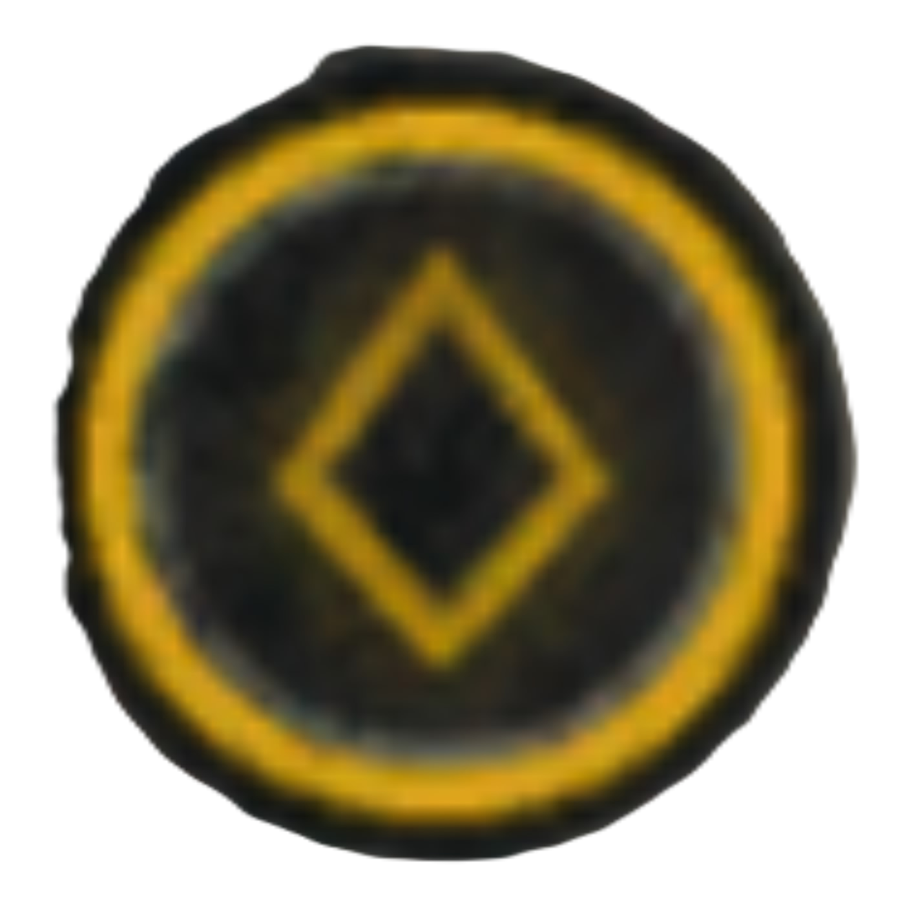
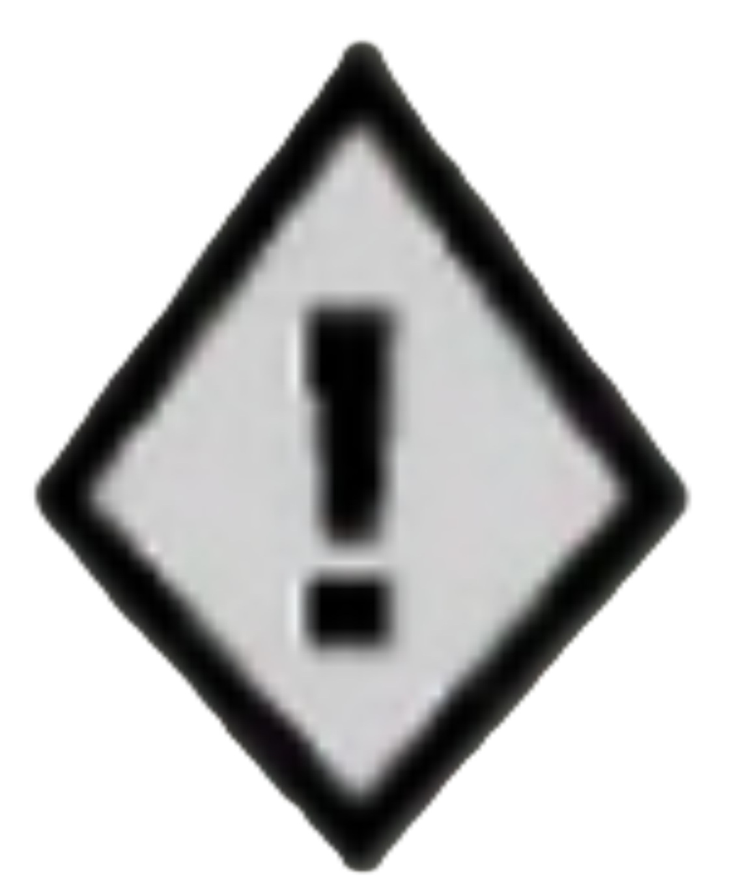

Assassin's Creed Origins
Ubisoft Entertainment
Original Release October 27, 2017

Blood and Gore
Drug Reference
Intense Violence
Nudity
Sexual Content
Strong Language
Use of Alcohol

Ancient Egypt, a land of majesty and intrigue, is disappearing in a ruthless fight for power. Unveil dark secrets and forgotten myths as you go back to the one founding moment: The Origins of the Assassin’s Brotherhood.
Full 100% Guide and Platinum Trophy Walkthrough for the Assassin's Creed Origins Video Game.
Playing the game in this order is merely just suggested; I do not force you to play in this order, but it is highly recommended.
This guide is compiled into chapters in accordance with pivotal moments in the storyline of Assassin's Creed Origins.
 Spoiler Warning: Plot details, ending details, or both are in the text and images which follows
Spoiler Warning: Plot details, ending details, or both are in the text and images which follows
100% Completion
With the introduction of the Assassin's Creed RPG era, Ubisoft deviates from the traditional 100% synchronization format of previous games and now has introduced quests as the main way to complete the game. To 100% complete Assassin's Creed Origins, you have to complete all Main Quests, Side Quests, and Location Activities. Please note that all Present Day segments throughout the story is tracked through the achievements in this guide. It is recommended to visit all locations as early as you can and synchronize with all viewpoints and complete all location activities as early as possible to make traveling easier and upgrade Bayek more easily for quests. Also note that as part of The Curse of the Pharaohs DLC, you can boost Bayek's level to 45 after completing the Present Day Quest "Blood Drive", which is recommended to do so so you can have an easier going with completing the main quests.
Main Quests
| Setting | Main Quest | Suggested Level | |||
|---|---|---|---|---|---|
| Siwa Oasis, 49 BCE | 1 | The Oasis | 1 | ||
| Siwa Oasis, One Year Ago | 2 |  | The False Oracle | 5 | |
| 3 | May Amun Walk Beside You | First Steps  | |||
| Blood Drive | |||||
| Yamu Surroundings, 48 BCE | Aya | 10 | |||
| 4 |  | Gennadios the Phylakitai | 11 | ||
| 5 | End of The Snake | 12 | |||
| 6 | Aya | 12 | I'm Just Getting Started | ||
| A New DNA Sample | |||||
| 7 | Egypt's Medjay | 12 | |||
| 8 | The Scarab's Sting | 15 | |||
| 9 | The Scarab's Lies | 19 | The Scarab  | ||
| Aegean Coast, 48 BCE | 10 | Pompeius Magnus | 12 | The Sea | |
| 11 | The Hyena | 20 | The Hyena | ||
| 12 | The Lizard's Mask | 21 | Wake Up! | ||
| 13 | The Lizard's Face | 23 | The Lizard | ||
| 14 | The Crocodile's Scales | 25 | |||
| 15 | The Crocodile's Jaws | 28 | The Crocodile | ||
| Fire and Sand | |||||
| 16 | Way of the Gabiniani | 31 | |||
| Mediterranean Coast, 48 BCE | 17 | Aya: Blade of the Goddess | 31 | ||
| 18 | The Battle of the Nile | 31 | |||
| 2 weeks later, Alexandria, Sarapeion Same day, Alexandria, Popular District | 19 | The Aftermath | 31 | The Siege | |
| 47 BCE, Outskirts of Siwa | 20 | The Final Weighing | 35 | Almost There | |
| 21 | Last of the Medjay | 35 | |||
| Rebirth | |||||
| Tyrrhenian Sea, 46 BCE Rome, Theatre of Pompey, 44 BCE, Ides of March | 22 | Fall Of An Empire, Rise Of Another | 35 | ||
| Rome, Pantheon District, 43 BCE | 23 | Birth of the Creed | The End |
Side Quests
| Region | Side Quest | Suggested Level | ||
|---|---|---|---|---|
| Siwa | 1 | Gear Up | 2 | |
| 2 |  | Family Reunion | 2 |